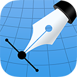

What is Inkpad?
 Inkpad is a vector illustration app designed from scratch for the iPad. It supports paths, compound paths, text, text on a path, images, groups, masks, gradient fills, and an unlimited number of layers.Inkpad is Free Software. It is distributed under the Mozilla Public License v2.0 which can be found at http://mozilla.org/MPL/2.0. The source code can be found at http://github.com/sprang/Inkpad.
Gallery
The Gallery displays a thumbnail for each of your drawings. Tap a thumbnail to open it for viewing or editing. Tap the title below the thumbnail to enter a new title.Tap the + button in the upper right corner of the screen to create a new drawing.
Tap the Camera button to take a photo and use it as the background for a new drawing.
Importing
Inkpad can import images, fonts (TrueType and OpenType), SVG, SVGZ, and Inkpad files via Dropbox. Tap Import to access your Dropbox.Imported fonts appear in the Gallery’s Fonts panel where they can be removed if you no longer wish to use them. When editing a drawing, the Font panel displays imported fonts intermixed with built-in fonts.
Tap the Samples button to reinstall the sample artwork included with Inkpad.
Exporting
Tap Select to enter selection mode.In selection mode, tap on thumbnails to select them (or deselect them). When one or more drawings are selected, tap Email to email them, or tap Dropbox to upload them directly to your Dropbox.
Tap the Trash button to delete the selected drawings.
Tap Done to exit selection mode.
Drawing
Use the Edit menu to cut, copy, paste, delete, and alter the selection.Use the Arrange menu to move objects backwards and forwards in the stack, group and ungroup objects, distribute objects, and align objects.
Use the Path menu to add anchors, remove anchors, outline strokes, join paths, combine paths, make masks, and place text on a path.
 Use the Color Adjustment menu to blend fill colors across selected shapes, adjust the hue, saturation, brightness and color balance of the selected objects, and desaturate and invert the colors of the selection.
Use the Color Adjustment menu to blend fill colors across selected shapes, adjust the hue, saturation, brightness and color balance of the selected objects, and desaturate and invert the colors of the selection.
When blending colors, the shapes at each extreme of the selection must have color fills (not gradients). For example, when blending horizontally, the leftmost and rightmost shapes must have color fills. Additionally, at least 3 shapes must be selected to enable the blending options.
Tap the Undo button to undo a change.
Tap the Redo button to redo a change.
At the top right of the screen are more options for working with your drawing:
Respectively, they are: Scale To Fit, Place Photo, Settings, and Share/Export.
Settings
Use the Settings panel to turn the grid on and off, control the grid spacing, and indicate whether you want drawn objects to snap to the grid, snap to points in existing paths, or snap to the edges of existing paths. You can also turn rulers on and off, change the units of your drawing, and modify the dimensions of your drawing.When Isolate Active Layer is enabled, you can only edit the active layer. The other layers in your drawing will be partially hidden. This makes it easy to edit the content of one layer without accidentally touching something in another layer.
When Outline Mode is enabled, you can only see the outlines of the objects in your drawing. This makes it easier to select objects that are obscured by other objects. It also significantly reduces rendering time for complex drawings.
Zooming
Use the standard iOS pinch gesture to zoom in and out. Once you’ve started a pinch gesture, you can lift one finger to move the canvas around without zooming.If your drawing units are set to pixels, Inkpad displays the drawing at actual pixel size when the zoom level is 100% (as indicated in the navigation bar).
If you’re using units that map to a physical measurement (inches, centimeters, etc.), Inkpad displays the drawing at print size when the zoom level is 100%.
Tools
Inkpad provides a number of tools for creating and modifying your drawing.The tool palette floats above the canvas. Drag it to move it around the screen. Flick it out of your way if necessary.
You can modify the behavior of many tools by holding down a second finger on the canvas after you start dragging. If you apply the second touch before you start dragging, you will zoom the canvas.
The behavior of each tool is described in the sections below.
Selection and Multi-Selection Tools
The Selection tool always selects exactly one object when you tap on the drawing. Any previously selected objects are deselected.The Multi-Selection tool does not discard the previous selection, but instead adds new objects to the selection as you tap them. Tapping a selected object with the Multi-Selection tool deselects it.
Select a group of objects by tapping an empty part of the drawing and dragging to enclose them. A box (called a marquee) appears to indicate the selection region.
Drag selected objects to move them around your drawing. Constrain movement horizontally, diagonally, and vertically by holding down a second finger on the canvas after you start dragging.
When exactly one path is selected, you can edit path anchors and control handles. Like the Pen tool described below, holding down a second finger when dragging a control handle causes the opposite control handle to remain fixed.
Double tap the anchors of a path to convert them between corners and curves. Double tapping a control handle removes it.
Double tap and drag an anchor to make the control handles mirror each other.
Pen Tool
The Pen tool is the most powerful way to create paths in Inkpad. You can use it to define any possible shape. To start, select the Pen from the tool palette.Tap once on the drawing to add a single corner point (an anchor) to your shape. A series of single taps will produce a polygon with sharp corners.
Double tap the last anchor in the path to end the shape without closing it.
To continue editing an existing unclosed path, first select it with the Selection tool. Then choose the Pen tool and tap one of the end points of the path. You can now extend the path or tap on the opposite end point to close it.
Freehand Tool
The Freehand tool draws freeform paths on the canvas. This is a great way to doodle and paint.
Eraser Tool
The Eraser tool erases portions of shapes in your drawing. It works on any ungrouped path or compound path.If there is a selection, the Eraser tool only operates on the selected shapes.
You can adjust the width of the eraser via a small settings panel that appears at the bottom of the canvas when the Eraser tool is selected.
Add Anchor Tool
The Add Anchor tool adds anchor points to existing shapes in your drawing.Tap the edge of a shape to add a new anchor.
The Add Anchor tool selects the shape if necessary, but it is easier to add anchors if you select the path first so that you can see the existing anchor points.
Scissor Tool (Path Splitting Tool)
The Scissor tool cuts existing paths.To split a path, tap an edge that you would like to cut. To split at an anchor, tap it.
If the path was previously closed, the path will open and both end points will be located at the tap location. If the path was not closed, it will split into two paths at the tap location.
Shape Tools
Shape tools create rectangles, ovals, stars, polygons, spirals and lines.Tap and hold the active shape tool in the tool palette to access them. A sub-palette appears that allows you to choose a different shape.
By default, rectangles and ovals are not constrained to a particular aspect ratio. If you want a perfect square or circle, touch the screen with a second finger after you start dragging out the shape.
You can adjust the corner radius of rectangles, the number of points in stars, the decay rate of spirals, and the number of sides in polygons via a small settings panel that appears at the bottom of the canvas when you select the matching tool.
If you touch the screen with a second finger while dragging out a star, the inner radius of the star is held constant, allowing you to make the star more or less pointy.
If you touch the screen with a second finger while dragging out a line, the line is constrained horizontally, diagonally and vertically.
Eyedropper Tool
The Eyedropper tool picks up the style attributes of existing objects in your drawing. It picks up and applies any property that can be edited in the style panels described in the next section.To use the eyedropper, drag your finger over the objects in your drawing until you’ve picked up the style that you want to apply.
If nothing is selected when you drag the eyedropper, the styles will be applied to the next object you create. If something is selected, the styles will be applied to the selected objects.
Text Tool
The Text tool creates text objects.Tap and drag to create a text box on the canvas. When you finish dragging, the onscreen keyboard appears, allowing you to edit the text. To stop editing, tap anywhere on the canvas.
To edit the text again in the future, select the Text tool, then tap the text, or choose one of the Selection tools and double tap the text object.
Scale and Rotate Tools
The Scale and Rotate tools transform selected objects.A single tap using either of these tools moves the pivot point for the transform (initially it appears at the center of the selection). The objects scale away from the pivot or rotate around it when you drag.
The Scale tool maintains the aspect ratio of the selected objects, but holding down a second finger while dragging performs a non-uniform scale.
The Rotate tool rotates freely, unless you hold down a second finger while dragging, in which case the tool constrains the rotation to 45° angles.
Styling Objects
Tap the style buttons in the toolbar to modify the appearance of selected objects:
They are, respectively: Font, Shadow and Opacity, Stroke, Fill, and Swatches.
The Shadow and Opacity button indicates the current shadow color and direction, as well as the object opacity. The colors indicated in the Stroke and Fill buttons are the values used when creating new shapes.
Swatches
The Swatches panel saves colors and gradients for later reuse.The Shadow/Stroke/Fill control at the bottom of the panel determines which style is saved when you press the + button in the upper right corner of the panel. It also determines which style is set when you tap one of the swatches in the panel.
Since gradients only function as fills, tapping a gradient swatch applies it to the fill style regardless of the setting.
Gradients
A gradient is a fill that transitions between two or more colors. A gradient is defined by a set of color stops. Each stop specifies a color and a position within the gradient.To apply a gradient, open the Fill panel and tap the Gradient button in the title bar.
Tap a color stop to select it. Use the color sliders at the top of the panel to alter the stop’s color. Drag the color stop to change its position within the gradient.
To reverse the gradient direction, swipe left or right in the gradient bar (the area above the color stops).
To evenly distribute the stops in a gradient, double tap the gradient bar.
To remove a color stop from the gradient, drag it up or down.
To insert a new color stop, tap the blank space between color stops (below the gradient bar).
When a shape has a gradient fill (and it is the only selected object), special control handles appear that allow you to change the gradient’s start and end points:

Layers
Inkpad supports an unlimited number of layers. Layers are useful for organizing complex drawings. Each component of the drawing can be on its own layer, making it much easier to edit.You can delete, duplicate, rearrange, rename, lock, and hide layers. You can also control the transparency of each layer.
Tap the Layers button in the toolbar to view the layers in your drawing.
Joining Paths
To join two unclosed paths, select them both and choose Join Paths from the Path menu.The paths are joined by attaching their closest endpoints, so you might want to line them up the way you intend them to connect before choosing Join Paths.
If the opposite ends of the new path coincide after joining, the new path is also closed.
Compound Paths
A compound path is a path composed of multiple subpaths. They are useful for creating shapes that contain holes.To create a compound path, select two or more paths and/or compound paths and choose Combine Paths from the Path menu.
To break a compound path back into simple paths, choose Separate Paths from the Path menu.
The relative direction of each subpath in a compound path determines which subpaths are filled. If all the paths run in the same direction, they are all filled.
If you’ve combined two paths hoping to make a hole, but the hole is filled, select one of the paths in the compound path and choose Reverse Path Direction from the Path menu.
Placing Text on a Path
To place text on a path, select a single non-compound path (or a path and an existing text object) and choose Place Text on Path from the Path menu.A text editor appears, allowing you to edit the text on the path. Reactivate this editor later by double tapping the path with one of the Selection tools (or tapping the path with the Text tool).
The path is editable just like any normal path, but style settings apply only to the text.
Drag the start bar that appears at the beginning of the text to adjust the starting position of the text on the path.
To make the text appear on the other side of the path, choose Reverse Path Direction from the Path menu.
Masks
A mask is a path, compound path, or text object that clips the contents of other drawing elements.To create a mask, select the objects that you want to mask and the path or text object that you want to use as the mask (the masking object must be the topmost selected object). Choose Mask from the Path menu.
To unmask objects, select the masked object and choose Unmask from the Path menu.
A masking path can have a fill and stroke just like any normal path.